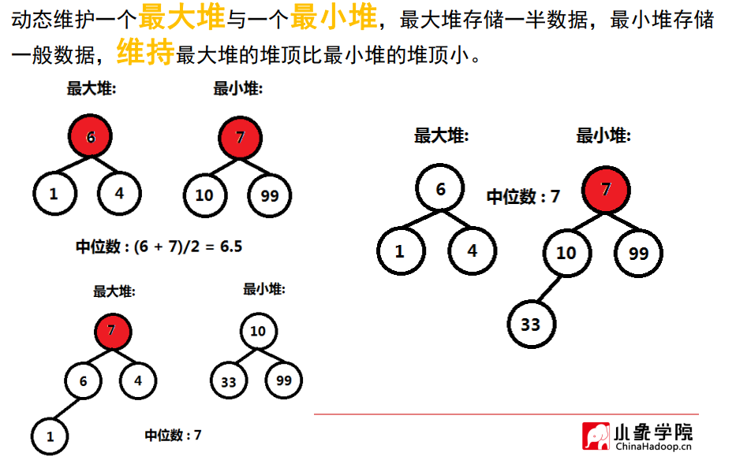

C++ 的 STL 优先级队列
构造最大最小堆的方式
1
2
3
| priority_queue<int> big_heap;
priority_queue<int, vector<int>, greater<int>> small_heap;
priority_queue<int, vector<int>, less<int>> big_heap2;
|
优先级队列及其函数实例
1
2
3
4
5
6
7
8
9
10
11
12
13
14
15
16
17
18
19
20
21
22
23
24
25
26
27
28
29
| #include <iostream>
#include <stack>
#include <queue>
using namespace std;
int main() {
priority_queue<int> big_heap;
priority_queue<int, vector<int>, greater<int>> small_heap;
priority_queue<int, vector<int>, less<int>> big_heap2;
if (big_heap.empty()) {
cout << "最大堆为空!" << endl;
}
int test[] = { 6,10,1,7,99,4,33 };
for (int i = 0; i < 7; i++) {
big_heap.push(test[i]);
}
cout << "最大堆堆顶，即最大值为 " << big_heap.top() << endl;
big_heap.push(1000);
cout << "最大堆堆顶，即最大值为 " << big_heap.top() << endl;
for (int i = 0; i < 3; i++)
{
big_heap.pop();
}
cout << "最大堆堆顶，即最大值为 " << big_heap.top() << endl;
cout << "最大堆的元素个数为：" << big_heap.size() << endl;
return 0;
}
|
结果：
1
2
3
4
5
| 最大堆为空!
最大堆堆顶，即最大值为 99
最大堆堆顶，即最大值为 1000
最大堆堆顶，即最大值为 10
最大堆的元素个数为：5
|
求数组中第K个最大元素
- 题目：在未排序的数组中找到第 k 个最大的元素。请注意，你需要找的是数组排序后的第 k 个最大的元素，而不是第 k 个不同的元素。
- 解决思路：维护一个K大小的最小队，堆中元素个数小于K时，新元素直接进入堆；否则，当堆顶元素小于新元素时，弹出堆顶，然后将该新元素加入堆。
- 例如： [3,2,1,5,6,4] 和 k = 2，由于k=2，开始3和2直接进入最小堆，堆顶为2，大于1，故不用操作，接着2大于5了，5要进去堆反而把2弹出，以此类推最后形成一个两个元素的最小堆，堆顶为5，即为所求第K大的数。道理是：两（k）个数中最小的即为6个数中第2大的。品，你细品！
1
2
3
4
5
6
7
8
9
10
11
12
13
14
15
16
| class Solution {
public:
int findKthLargest(vector<int>& nums, int k) {
priority_queue<int, vector<int>, greater<int>> Q;
for (int i = 0; i < nums.size(); i++)
{
if (Q.size() < k)
Q.push(nums[i]);
else if (Q.top() < nums[i]) {
Q.pop();
Q.push(nums[i]);
}
}
return Q.top();
}
};
|
求一组数据的中位数
问题
求一组数据的中位数，中位数是有序列表中间的数。如果列表长度是偶数，中位数则是中间两个数的平均值。
例如，
[2,3,4] 的中位数是 3
[2,3] 的中位数是 (2 + 3) / 2 = 2.5
设计一个支持以下两种操作的数据结构：
- void addNum(int num) - 从数据流中添加一个整数到数据结构中。
- double findMedian() - 返回目前所有元素的中位数。
解决
- 思路：动态维护一个 最大堆 和一个 最小堆，每个堆各存储一半的数据，条件是最大堆的堆顶比最小堆的堆顶小（或相等，也就是说这样数据就被按照大小分成两半了。如果整个数据集元素个数为奇数，则会有一个堆的元素比另一个堆元素多一个，即那个多元素的堆的堆顶就为中位数；如果元素个数为偶数，则取两个堆顶的元素的平均数则为中位数。

- 算法主要是在加入新数据时维护最大堆和最小堆，有三种情况：
- 情况1，目前最大堆和最小堆元素个数一致，则检查：如果新元素小于最大堆堆顶，则加入最大堆；如果新元素大于最小堆堆顶，则加入最小堆。
- 情况2：最大堆比最小堆多一个元素，则检查：如果新元素比最大堆元素大，则直接加入最小堆即可；否则，如果新元素比最大堆元素小或者相等，要注意了，这时候不能直接加入最大堆（会导致最大堆操作完比最小堆多两个元素），正确应该把最大堆堆顶元素加入最小堆并弹出，再把新元素加入最大堆，这样就保持平衡了，女少口阿。
- 情况3：最小堆比最大堆多一个元素，与上面思路一致！
完整代码：
1
2
3
4
5
6
7
8
9
10
11
12
13
14
15
16
17
18
19
20
21
22
23
24
25
26
27
28
29
30
31
32
33
34
35
36
37
38
39
40
41
42
43
44
45
46
47
48
49
50
51
52
53
54
55
56
57
58
59
60
61
62
63
64
65
66
67
68
69
70
71
72
73
| #include <iostream>
#include <stack>
#include <queue>
using namespace std;
class MedianFinder {
public:
MedianFinder() {
}
void addNum(int num) {
if (big_heap.empty()) {
big_heap.push(num);
return;
}
if (big_heap.size() == small_heap.size()) {
if (num < big_heap.top()) {
big_heap.push(num);
}
else {
small_heap.push(num);
}
}
else if (big_heap.size() > small_heap.size()) {
if (num > big_heap.top())
small_heap.push(num);
else {
small_heap.push(big_heap.top());
big_heap.pop();
big_heap.push(num);
}
}
else if (big_heap.size() < small_heap.size()) {
if (num < small_heap.top())
big_heap.push(num);
else {
big_heap.push(small_heap.top());
small_heap.pop();
small_heap.push(num);
}
}
}
double findMedian() {
if (big_heap.size() == small_heap.size()) {
return (double(big_heap.top()) + small_heap.top()) / 2.0;
}
else if (big_heap.size() > small_heap.size())
return big_heap.top();
return small_heap.top();
}
private:
priority_queue<int, vector<int>, less<int>> big_heap;
priority_queue<int, vector<int>, greater<int>> small_heap;
};
int main() {
MedianFinder m;
m.addNum(1);
m.addNum(2);
cout << m.findMedian() << endl;
m.addNum(3);
cout << m.findMedian() << endl;
return 0;
}
|
结果：
ps: 小象学院教程 https://www.bilibili.com/video/BV1GW411Q77S?t=7029&p=2 的笔记
LeetCode题号： 215，295